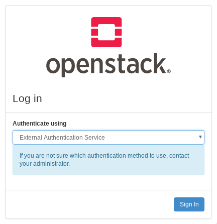
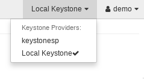

Configuring Keystone for Federation¶
Keystone as a Service Provider (SP)¶
Prerequisites¶
If you are not familiar with the idea of federated identity, see the Introduction to Keystone Federation first.
In this section, we will configure keystone as a Service Provider, consuming identity properties issued by an external Identity Provider, such as SAML assertions or OpenID Connect claims. For testing purposes, we recommend using samltest.id as a SAML Identity Provider, or Google as an OpenID Connect Identity Provider, and the examples here will references those providers. If you plan to set up Keystone as an Identity Provider (IdP), it is easiest to set up keystone with a dummy SAML provider first and then reconfigure it to point to the keystone Identity Provider later.
The following configuration steps were performed on a machine running Ubuntu 16.04 and Apache 2.4.18.
To enable federation, you’ll need to run keystone behind a web server such as Apache rather than running the WSGI application directly with uWSGI or Gunicorn. See the installation guide for RedHat or Ubuntu to configure the Apache web server for keystone.
Throughout the rest of the guide, you will need to decide on three pieces of information and use them consistently throughout your configuration:
The protocol name. This must be a valid keystone auth method and must match one of:
saml2,openid,mappedor a custom auth method for which you must register as an external driver.The identity provider name. This can be arbitrary.
The entity ID of the service provider. This should be a URN but need not resolve to anything.
You will also need to decide what HTTPD module to use as a Service Provider.
This guide provides examples for mod_shib and mod_auth_mellon as SAML
service providers, and mod_auth_openidc as an OpenID Connect Relying
Party.
Note
In this guide, the keystone Service Provider is configured on a host called
sp.keystone.example.org listening on the standard HTTPS port. All keystone
paths will start with the keystone version prefix, /v3. If you have
configured keystone to listen on port 5000, or to respond on the path
/identity (for example), take this into account in your own
configuration.
Creating federation resources in keystone¶
You need to create three resources via the keystone API to identify the Identity Provider to keystone and align remote user attributes with keystone objects:
See also the keystone federation API reference.
Create an Identity Provider¶
Create an Identity Provider object in keystone, which represents the Identity Provider we will use to authenticate end users:
$ openstack identity provider create --remote-id https://samltest.id/saml/idp samltest
The value for the remote-id option is the unique identifier provided by the
Identity Provider, called the entity ID or the remote ID. For a SAML
Identity Provider, it can found by querying its metadata endpoint:
$ curl -s https://samltest.id/saml/idp | grep -o 'entityID=".*"'
entityID="https://samltest.id/saml/idp"
For an OpenID Connect IdP, it is the Identity Provider’s Issuer Identifier. A remote ID must be globally unique: two identity providers cannot be associated with the same remote ID. The remote ID will usually appear as a URN but need not be a resolvable URL.
The local name, called samltest in our example, is decided by you and will
be used by the mapping and protocol, and later for authentication.
Note
An identity provider keystone object may have multiple remote-ids
specified, this allows the same keystone identity provider resource to be
used with multiple external identity providers. For example, an identity
provider resource university-idp, may have the following remote_ids:
['university-x', 'university-y', 'university-z'].
This removes the need to configure N identity providers in keystone.
See also the API reference on identity providers.
Create a Mapping¶
Next, create a mapping. A mapping is a set of rules that link the attributes of a remote user to user properties that keystone understands. It is especially useful for granting remote users authorization to keystone resources, either by associating them with a local keystone group and inheriting its role assignments, or dynamically provisioning projects within keystone based on these rules.
Note
By default, group memberships that a user gets from a mapping are only valid
for the duration of the token. It is possible to persist these groups
memberships for a limited period of time. To enable this, either
set the authorization_ttl` attribute of the identity provider, or the
``[federation] default_authorization_ttl in the keystone.conf file. This
value is in minutes, and will result in a lag from when a user is removed
from a group in the identity provider, and when that will happen in keystone.
Please consider your security requirements carefully.
An Identity Provider has exactly one mapping specified per protocol. Mapping objects can be used multiple times by different combinations of Identity Provider and Protocol.
As a simple example, create a mapping with a single rule to map all remote users to a local user in a single group in keystone:
$ cat > rules.json <<EOF
[
{
"local": [
{
"user": {
"name": "{0}"
},
"group": {
"domain": {
"name": "Default"
},
"name": "federated_users"
}
}
],
"remote": [
{
"type": "REMOTE_USER"
}
]
}
]
EOF
$ openstack mapping create --rules rules.json samltest_mapping
This mapping rule evaluates the REMOTE_USER variable set by the HTTPD auth
module and uses it to fill in the name of the local user in keystone. It also
ensures all remote users become effective members of the federated_users
group, thereby inheriting the group’s role assignments.
In this example, the federated_users group must exist in the keystone
Identity backend and must have a role assignment on some project, domain, or
system in order for federated users to have an authorization in keystone. For
example, to create the group:
$ openstack group create federated_users
Create a project these users should be assigned to:
$ openstack project create federated_project
Assign the group a member role in the project:
$ openstack role add --group federated_users --project federated_project member
Mappings can be quite complex. A detailed guide can be found on the Mapping Combinations page.
See also the API reference on mapping rules.
Create a Protocol¶
Now create a federation protocol. A federation protocol object links the Identity Provider to a mapping.
You can create a protocol like this:
$ openstack federation protocol create saml2 \
--mapping samltest_mapping --identity-provider samltest
As mentioned in Prerequisites, the name you give the protocol is not arbitrary, it must be a valid auth method.
See also the API reference for federation protocols.
Configuring an HTTPD auth module¶
This guide currently only includes examples for the Apache web server, but it possible to use SAML, OpenIDC, and other auth modules in other web servers. See the installation guides for running keystone behind Apache for RedHat or Ubuntu.
Configure protected endpoints¶
There is a minimum of one endpoint that must be protected in the VirtualHost configuration for the keystone service:
<Location /v3/OS-FEDERATION/identity_providers/IDENTITYPROVIDER/protocols/PROTOCOL/auth>
Require valid-user
AuthType [...]
...
</Location>
This is the endpoint for federated users to request an unscoped token.
If configuring WebSSO, you should also protect one or both of the following endpoints:
<Location /v3/auth/OS-FEDERATION/websso/PROTOCOL>
Require valid-user
AuthType [...]
...
</Location>
<Location /v3/auth/OS-FEDERATION/identity_providers/IDENTITYPROVIDER/protocols/PROTOCOL/websso>
Require valid-user
AuthType [...]
...
</Location>
The first example only specifies a protocol, and keystone will use the incoming remote ID to determine the Identity Provider. The second specifies the Identity Provider directly, which must then be supplied to horizon when configuring horizon for WebSSO.
The path must exactly match the path that will be used to access the keystone
service. For example, if the identity provider you created in Create an
Identity Provider is samltest and the protocol you created in Create a
Protocol is saml2, then the Locations will be:
<Location /v3/OS-FEDERATION/identity_providers/samltest/protocols/saml2/auth>
Require valid-user
AuthType [...]
...
</Location>
<Location /v3/auth/OS-FEDERATION/websso/saml2>
Require valid-user
AuthType [...]
...
</Location>
<Location /v3/auth/OS-FEDERATION/identity_providers/samltest/protocols/saml2/websso>
Require valid-user
AuthType [...]
...
</Location>
However, if you have configured the keystone service to use a virtual path such as
/identity, that part of the path should be included:
<Location /identity/v3/OS-FEDERATION/identity_providers/samltest/protocols/saml2/auth>
Require valid-user
AuthType [...]
...
</Location>
...
Configure the auth module¶
If your Identity Provider is a SAML IdP, there are two main Apache modules that can be used as a SAML Service Provider: mod_shib and mod_auth_mellon. For an OpenID Connect Identity Provider, mod_auth_openidc is used. You can also use other auth modules such as kerberos, X.509, or others. Check the documentation for the provider you choose for detailed installation and configuration guidance.
Depending on the Service Provider module you’ve chosen, you will need to install the applicable Apache module package and follow additional configuration steps. This guide contains examples for two major federation protocols:
SAML2.0 - see guides for the following implementations:
OpenID Connect: Set up mod_auth_openidc.
Configuring Keystone¶
While the Apache module does the majority of the heavy lifting, minor changes are needed to allow keystone to allow and understand federated authentication.
Add the Auth Method¶
Add the authentication methods to the [auth] section in keystone.conf.
The auth method here must have the same name as the protocol you created in
Create a Protocol. You should also remove external as an allowable
method.
[auth]
methods = password,token,saml2,openid
Configure the Remote ID Attribute¶
Keystone is mostly apathetic about what HTTPD auth module you choose to configure for your Service Provider, but must know what header key to look for from the auth module to determine the Identity Provider’s remote ID so it can associate the incoming request with the Identity Provider resource. The key name is decided by the auth module choice:
For
mod_shib: useShib-Identity-ProviderFor
mod_auth_mellon: the attribute name is configured with theMellonIdPparameter in the VirtualHost configuration, if set to e.g.IDPthen useMELLON_IDPFor
mod_auth_openidc: the attribute name is related to theOIDCClaimPrefixparameter in the Apache configuration, if set to e.g.OIDC-useHTTP_OIDC_ISS
It is recommended that this option be set on a per-protocol basis by creating a new section named after the protocol:
[saml2]
remote_id_attribute = Shib-Identity-Provider
[openid]
remote_id_attribute = HTTP_OIDC_ISS
Alternatively, a generic option may be set at the [federation] level.
[federation]
remote_id_attribute = HTTP_OIDC_ISS
Add a Trusted Dashboard (WebSSO)¶
If you intend to configure horizon as a WebSSO frontend, you must specify the URLs of trusted horizon servers. This value may be repeated multiple times. This setting ensures that keystone only sends token data back to trusted servers. This is performed as a precaution, specifically to prevent man-in-the-middle (MITM) attacks. The value must exactly match the origin address sent by the horizon server, including any trailing slashes.
[federation]
trusted_dashboard = https://horizon1.example.org/auth/websso/
trusted_dashboard = https://horizon2.example.org/auth/websso/
Add the Callback Template (WebSSO)¶
If you intend to configure horizon as a WebSSO frontend, and if not already
done for you by your distribution’s keystone package, copy the
sso_callback_template.html template into the location specified by the
[federation]/sso_callback_template option in keystone.conf. You can also
use this template as an example to create your own custom HTML redirect page.
Restart the keystone WSGI service or the Apache frontend service after making changes to your keystone configuration.
# systemctl restart apache2
Configuring Horizon as a WebSSO Frontend¶
Note
Consult horizon’s official documentation for details on configuring horizon.
Keystone on its own is not capable of supporting a browser-based Single Sign-on
authentication flow such as the SAML2.0 WebSSO profile, therefore we must enlist
horizon’s assistance. Horizon can be configured to support SSO by enabling it in
horizon’s local_settings.py configuration file and adding the possible
authentication choices that will be presented to the user on the login screen.
Ensure the WEBSSO_ENABLED option is set to True in horizon’s local_settings.py file, this will provide users with an updated login screen for horizon.
WEBSSO_ENABLED = True
Configure the options for authenticating that a user may choose from at the login screen. The pairs configured in this list map a user-friendly string to an authentication option, which may be one of:
The string
credentialswhich forces horizon to present its own username and password fields that the user will use to authenticate as a local keystone userThe name of a protocol that you created in Create a Protocol, such as
saml2oropenid, which will cause horizon to call keystone’s WebSSO API without an Identity Provider to authenticate the userA string that maps to an Identity Provider and Protocol combination configured in
WEBSSO_IDP_MAPPINGwhich will cause horizon to call keystone’s WebSSO API specific to the given Identity Provider.
WEBSSO_CHOICES = (
("credentials", _("Keystone Credentials")),
("openid", _("OpenID Connect")),
("saml2", _("Security Assertion Markup Language")),
("myidp_openid", "Acme Corporation - OpenID Connect"),
("myidp_saml2", "Acme Corporation - SAML2")
)
WEBSSO_IDP_MAPPING = {
"myidp_openid": ("myidp", "openid"),
"myidp_saml2": ("myidp", "saml2")
}
The initial selection of the dropdown menu can also be configured:
WEBSSO_INITIAL_CHOICE = "credentials"
Remember to restart the web server when finished configuring horizon:
# systemctl restart apache2
Authenticating¶
Use the CLI to authenticate with a SAML2.0 Identity Provider¶
The python-openstackclient can be used to authenticate a federated user in a
SAML Identity Provider to keystone.
Note
The SAML Identity Provider must be configured to support the ECP authentication profile.
To use the CLI tool, you must have the name of the Identity Provider resource in keystone, the name of the federation protocol configured in keystone, and the ECP endpoint for the Identity Provider. If you are the cloud administrator, the name of the Identity Provider and protocol was configured in Create an Identity Provider and Create a Protocol respectively. If you are not the administrator, you must obtain this information from the administrator.
The ECP endpoint for the Identity Provider can be obtained from its metadata
without involving an administrator. This endpoint is the
urn:oasis:names:tc:SAML:2.0:bindings:SOAP binding in the metadata document:
$ curl -s https://samltest.id/saml/idp | grep urn:oasis:names:tc:SAML:2.0:bindings:SOAP
<SingleSignOnService Binding="urn:oasis:names:tc:SAML:2.0:bindings:SOAP" Location="https://samltest.id/idp/profile/SAML2/SOAP/ECP"/>
Find available scopes¶
If you are a new user and are not aware of what resources you have access to, you can use an unscoped query to list the projects or domains you have been granted a role assignment on:
export OS_AUTH_TYPE=v3samlpassword
export OS_IDENTITY_PROVIDER=samltest
export OS_IDENTITY_PROVIDER_URL=https://samltest.id/idp/profile/SAML2/SOAP/ECP
export OS_PROTOCOL=saml2
export OS_USERNAME=morty
export OS_PASSWORD=panic
export OS_AUTH_URL=https://sp.keystone.example.org/v3
export OS_IDENTITY_API_VERSION=3
openstack federation project list
openstack federation domain list
Get a scoped token¶
If you already know the project, domain or system you wish to scope to, you can directly request a scoped token:
export OS_AUTH_TYPE=v3samlpassword
export OS_IDENTITY_PROVIDER=samltest
export OS_IDENTITY_PROVIDER_URL=https://samltest.id/idp/profile/SAML2/SOAP/ECP
export OS_PROTOCOL=saml2
export OS_USERNAME=morty
export OS_PASSWORD=panic
export OS_AUTH_URL=https://sp.keystone.example.org/v3
export OS_IDENTITY_API_VERSION=3
export OS_PROJECT_NAME=federated_project
export OS_PROJECT_DOMAIN_NAME=Default
openstack token issue
Use horizon to authenticate with an external Identity Provider¶
When horizon is configured to enable WebSSO, a dropdown menu will appear on the login screen before the user has authenticated. Select an authentication method from the menu to be redirected to your Identity Provider for authentication.

Keystone as an Identity Provider (IdP)¶
Prerequisites¶
When keystone is configured as an Identity Provider, it is often referred to as Keystone to Keystone, because it enables federation between multiple OpenStack clouds using the SAML2.0 protocol.
If you are not familiar with the idea of federated identity, see the introduction first.
When setting up Keystone to Keystone, it is easiest to configure a keystone Service Provider first with a sandbox Identity Provider such as samltest.id.
This feature requires installation of the xmlsec1 tool via your distribution packaging system (for instance apt or yum)
# apt-get install xmlsec1
Note
In this guide, the keystone Identity Provider is configured on a host called
idp.keystone.example.org listening on the standard HTTPS port. All keystone
paths will start with the keystone version prefix, /v3. If you have
configured keystone to listen on port 5000, or to respond on the path
/identity (for example), take this into account in your own
configuration.
Configuring Metadata¶
Since keystone is acting as a SAML Identity Provider, its metadata must be
configured in the [saml] section (not to be confused with an optional
[saml2] section which you may have configured in Configure the Remote Id
Attribute while setting up keystone as Service Provider) of keystone.conf
so that it can served by the metadata API.
The two parameters that must be set in order for keystone to generate
metadata are idp_entity_id and idp_sso_endpoint:
[saml]
idp_entity_id=https://idp.keystone.example.org/v3/OS-FEDERATION/saml2/idp
idp_sso_endpoint=https://idp.keystone.example.org/v3/OS-FEDERATION/saml2/sso
idp_entity_id sets the Identity Provider entity ID, which is a string of
your choosing that uniquely identifies the Identity Provider to any Service
Provider.
idp_sso_endpoint is required to generate valid metadata, but its value is
currently not used because keystone as an Identity Provider does not support the
SAML2.0 WebSSO auth profile. This may change in the future which is why there is
no default value provided and must be set by the operator.
For completeness, the following Organization and Contact configuration options should also be updated to reflect your organization and administrator contact details.
idp_organization_name=example_company
idp_organization_display_name=Example Corp.
idp_organization_url=example.com
idp_contact_company=example_company
idp_contact_name=John
idp_contact_surname=Smith
idp_contact_email=jsmith@example.com
idp_contact_telephone=555-555-5555
idp_contact_type=technical
It is important to take note of the default certfile and keyfile
options, and adjust them if necessary:
certfile=/etc/keystone/ssl/certs/signing_cert.pem
keyfile=/etc/keystone/ssl/private/signing_key.pem
You must generate a PKI key pair and copy the files to these paths. You can use
the openssl tool to do so. Keystone does not provide a utility for this.
Check the idp_metadata_path setting and adjust it if necessary:
idp_metadata_path=/etc/keystone/saml2_idp_metadata.xml
To create metadata for your keystone IdP, run the keystone-manage command
and redirect the output to a file. For example:
# keystone-manage saml_idp_metadata > /etc/keystone/saml2_idp_metadata.xml
Finally, restart the keystone WSGI service or the web server frontend:
# systemctl restart apache2
Creating a Service Provider Resource¶
Create a Service Provider resource to represent your Service Provider as an object in keystone:
$ openstack service provider create keystonesp \
--service-provider-url https://sp.keystone.example.org/Shibboleth.sso/SAML2/ECP
--auth-url https://sp.keystone.example.org/v3/OS-FEDERATION/identity_providers/keystoneidp/protocols/saml2/auth
The --auth-url is the federated auth endpoint for a specific Identity
Provider and protocol name, here named keystoneidp and saml2.
The --service-provider-url is the
urn:oasis:names:tc:SAML:2.0:bindings:PAOS binding for the Assertion Consumer
Service of the Service Provider. It can be obtained from the Service Provider
metadata:
$ curl -s https://sp.keystone.example.org/Shibboleth.sso/Metadata | grep urn:oasis:names:tc:SAML:2.0:bindings:PAOS
<md:AssertionConsumerService Binding="urn:oasis:names:tc:SAML:2.0:bindings:PAOS" Location="https://sp.keystone.example.org/Shibboleth.sso/SAML2/ECP" index="4"/>
Authenticating¶
Use the CLI to authenticate with Keystone-to-Keystone¶
Use python-openstackclient to authenticate with the IdP and then get a
scoped token from the SP.
export OS_USERNAME=demo
export OS_PASSWORD=nomoresecret
export OS_AUTH_URL=https://idp.keystone.example.org/v3
export OS_IDENTITY_API_VERSION=3
export OS_PROJECT_NAME=federated_project
export OS_PROJECT_DOMAIN_NAME=Default
export OS_SERVICE_PROVIDER=keystonesp
export OS_REMOTE_PROJECT_NAME=federated_project
export OS_REMOTE_PROJECT_DOMAIN_NAME=Default
openstack token issue
Use Horizon to switch clouds¶
No additional configuration is necessary to enable horizon for Keystone to Keystone. Log into the horizon instance for the Identity Provider using your regular local keystone credentials. Once logged in, you will see a Service Provider dropdown menu which you can use to switch your dashboard view to another cloud.

Setting Up OpenID Connect¶
See Keystone as a Service Provider (SP) before proceeding with these OpenIDC-specific instructions.
When using OpenID Connect, you must have a third party OpenID Provider or Identity Provider. Some examples of OpenID Connect Providers are Google, Keycloak, Microsoft Entra, and GitLab. Keystone will use mod_auth_openidc to enable Keystone to act as an OpenID Connect Relying Party, which is the name of an application that depends on an OpenID Connect Provider for identity. You must add an OpenID Connect Client representing the Keystone Service Provider in your OpenID Connect Provider.
Claims are pieces of user details or attributes provided by the OpenID Connect Provider to the OpenID Connect Relying Party. Claims can be retrieved from the ID token or from the UserInfo endpoint. Claims are requested by specifying scopes, which map to sets of claims.
For the purposes of consistency with the rest of the Keystone documentation, the term Service Provider will be used which means Keystone acting as a Service Provider and is equivilent to OpenID Connect Relying Party.
These examples use Google as an OpenID Connect Provider. The Service Provider must be added to the Identity Provider in the Google API console.
Configuring Apache HTTPD for mod_auth_openidc¶
Note
You are advised to carefully examine the mod_auth_openidc documentation.
Install the Module¶
Install the Apache module package. For example, on Ubuntu:
# apt-get install libapache2-mod-auth-openidc
The package and module name will differ between distributions.
Configure mod_auth_openidc¶
In the Apache configuration for the keystone VirtualHost, set the following OIDC options:
OIDCClaimPrefix "OIDC-"
OIDCClaimDelimiter ";"
OIDCResponseType "id_token"
OIDCScope "openid email profile"
OIDCProviderMetadataURL https://accounts.google.com/.well-known/openid-configuration
OIDCOAuthVerifyJwksUri https://www.googleapis.com/oauth2/v3/certs
OIDCClientID <openid_client_id>
OIDCClientSecret <openid_client_secret>
OIDCCryptoPassphrase <random string>
OIDCRedirectURI https://sp.keystone.example.org/v3/redirect_uri
OIDCClaimPrefix prefixes all claims with the value, which will then
be prefixed with HTTP_ when presented to Keystone, with dashes (“-“)
converted to underscores (“_”) and uppercased. Resulting in the iss claim
being presented to Keystone as HTTP_OIDC_ISS using the OIDCClaimPrefix
from above. Claims are pieces of JSON data but Apache only forwards on string
data to Keystone. So by default lists are converted to comma (“,”) separated
strings while Keystone’s mapping code expects them to be semi-colon (“;”)
separated. To properly support this set the OIDCClaimDelimiter to utilize
semi-colons (“;”). OIDCResponseType specifies the OpenID Connect Flow
which will be used. To use the Implicit Flow then specify the value id_token
and to use the Authorization Code Flow, specify the value code. Some OpenID
Connect Providers do not enable Implicit Flow by default.
OIDCScope is the list of attributes or claims that the user will authorize the
Identity Provider to send to the Service Provider. OIDCClientID and
OIDCClientSecret must be generated and obtained from the Identity Provider,
OIDCProviderMetadataURL is a URL from which the Service Provider will fetch
the Identity Provider’s metadata. OIDCOAuthVerifyJwksUri is a URL from
which the Service Provider will download the public key from the Identity
Provider to check if the user’s access token is valid or not, this configuration
must be used while using the AuthType auth-openidc, when using the AuthType
openid-connect and the OIDCProviderMetadataURL is configured, this property
will not be necessary.
OIDCRedirectURI is a vanity URL that must
point to a protected path that does not have any content, such as an extension
of the protected federated auth path. It should not match any Keystone API endpoints
or mod_auth_openidc will handle requests to the endpoint instead of Keystone. This
can lead to unusual errors and behaviors from Keystone.
Note
If using a mod_wsgi version less than 4.3.0, then the OIDCClaimPrefix must be specified to have only alphanumerics or a dash (“-“). This is because mod_wsgi blocks headers that do not fit this criteria.
Configure Protected Endpoints¶
Configure each protected path to use the openid-connect AuthType:
<Location ~ "/redirect_uri">
Require valid-user
AuthType openid-connect
</Location>
<Location /v3/OS-FEDERATION/identity_providers/google/protocols/openid/auth>
Require valid-user
AuthType openid-connect
</Location>
Note
To add support to Bearer Access Token authentication flow that is used by
applications that do not adopt the browser flow, such the OpenStack CLI, you
will need to change the AuthType from openid-connect to
auth-openidc.
Do the same for the WebSSO auth paths if using horizon:
<Location /v3/auth/OS-FEDERATION/websso/openid>
Require valid-user
AuthType openid-connect
</Location>
<Location /v3/auth/OS-FEDERATION/identity_providers/google/protocols/openid/websso>
Require valid-user
AuthType openid-connect
</Location>
Remember to reload Apache after altering the VirtualHost:
# systemctl reload apache2
Note
When creating mapping rules, in keystone, note that the ‘remote’
attributes will be prefixed, with HTTP_, so for instance, if you set
OIDCClaimPrefix to OIDC-, then a typical remote value to check for
is: HTTP_OIDC_ISS.
Configuring Multiple Identity Providers¶
To configure multiples Identity Providers in your environment you will need to set your OIDC options like the following options:
OIDCClaimPrefix "OIDC-"
OIDCClaimDelimiter ";"
OIDCResponseType "id_token"
OIDCScope "openid email profile"
OIDCMetadataDir <IDP metadata directory>
OIDCCryptoPassphrase <random string>
OIDCRedirectURI https://sp.keystone.example.org/redirect_uri
OIDCOAuthVerifyCertFiles <kid>#</path/to-cert.pem> <kid2>#</path/to-cert2.pem> <kidN>#</path/to-certN.pem>
The OIDCOAuthVerifyCertFiles is a tuple separated with space
containing the key-id (kid) of the Issuer’s public key and a path to
the Issuer certificate. The separator # is used to split the (kid)
and the public certificate address
The metadata folder configured in the option OIDCMetadataDir must have all
your Identity Providers configurations, the name of the files will be
the name (with path) of the Issuers like:
- <IDP metadata directory>
|
- accounts.google.com.client
|
- accounts.google.com.conf
|
- accounts.google.com.provider
|
- keycloak.example.org%2Fauth%2Frealms%2Fidp.client
|
- keycloak.example.org%2Fauth%2Frealms%2Fidp.conf
|
- keycloak.example.org%2Fauth%2Frealms%2Fidp.provider
Note
The name of the file must be url-encoded if needed, as the Apache2 mod_auth_openidc
will get the raw value from the query parameter iss from the http request
and check if there is a metadata with this name, as the query parameter is
url-encoded, so the metadata file name need to be encoded too. For example, if you have an
Issuer with / in the URL, then you need to escape it to %2F by
applying a URL escape in the file name.
The content of these files must be a JSON like
accounts.google.com.client:
{
"client_id":"<openid_client_id>",
"client_secret":"<openid_client_secret>"
}
The .client file handles the SP credentials in the Issuer.
accounts.google.com.conf:
This file will be a JSON that overrides some of OIDC options. The options that are able to be overridden are listed in the OpenID Connect Apache2 plugin documentation.
If you do not want to override the config values, you can leave this file as
an empty JSON like {}.
accounts.google.com.provider:
This file will contain all specifications about the IdentityProvider. To
simplify, you can just use the JSON returned in the .well-known endpoint:
{
"issuer": "https://accounts.google.com",
"authorization_endpoint": "https://accounts.google.com/o/oauth2/v2/auth",
"token_endpoint": "https://oauth2.googleapis.com/token",
"userinfo_endpoint": "https://openidconnect.googleapis.com/v1/userinfo",
"revocation_endpoint": "https://oauth2.googleapis.com/revoke",
"jwks_uri": "https://www.googleapis.com/oauth2/v3/certs",
"response_types_supported": [
"code",
"token",
"id_token",
"code token",
"code id_token",
"token id_token",
"code token id_token",
"none"
],
"subject_types_supported": [
"public"
],
"id_token_signing_alg_values_supported": [
"RS256"
],
"scopes_supported": [
"openid",
"email",
"profile"
],
"token_endpoint_auth_methods_supported": [
"client_secret_post",
"client_secret_basic"
],
"claims_supported": [
"aud",
"email",
"email_verified",
"exp",
"family_name",
"given_name",
"iat",
"iss",
"locale",
"name",
"picture",
"sub"
],
"code_challenge_methods_supported": [
"plain",
"S256"
]
}
Continue configuring keystone¶
Setting Up Mellon¶
See Keystone as a Service Provider (SP) before proceeding with these Mellon-specific instructions.
Configuring Apache HTTPD for mod_auth_mellon¶
Note
You are advised to carefully examine the mod_auth_mellon documentation.
Follow the steps outlined at: Keystone install guide for SUSE, RedHat or Ubuntu.
Install the Module¶
Install the Apache module package. For example, on Ubuntu:
# apt-get install libapache2-mod-auth-mellon
The package and module name will differ between distributions.
Configure mod_auth_mellon¶
Unlike mod_shib, all of mod_auth_mellon’s configuration is done in
Apache, not in a separate config file. Set up the shared settings in a single
<Location> directive near the top in your keystone VirtualHost file, before
your protected endpoints:
<Location /v3>
MellonEnable "info"
MellonSPPrivateKeyFile /etc/apache2/mellon/sp.keystone.example.org.key
MellonSPCertFile /etc/apache2/mellon/sp.keystone.example.org.cert
MellonSPMetadataFile /etc/apache2/mellon/sp-metadata.xml
MellonIdPMetadataFile /etc/apache2/mellon/idp-metadata.xml
MellonEndpointPath /v3/mellon
MellonIdP "IDP"
</Location>
Configure Protected Endpoints¶
Configure each protected path to use the Mellon AuthType:
<Location /v3/OS-FEDERATION/identity_providers/samltest/protocols/saml2/auth>
Require valid-user
AuthType Mellon
MellonEnable auth
</Location>
Do the same for the WebSSO auth paths if using horizon as a single sign-on frontend:
<Location /v3/auth/OS-FEDERATION/websso/saml2>
Require valid-user
AuthType Mellon
MellonEnable auth
</Location>
<Location /v3/auth/OS-FEDERATION/identity_providers/samltest/protocols/saml2/websso>
Require valid-user
AuthType Mellon
MellonEnable auth
</Location>
Configure the Mellon Service Provider Metadata¶
Mellon provides a script called mellon_create_metadata.sh``_ which generates
the values for the config directives ``MellonSPPrivateKeyFile,
MellonSPCertFile, and MellonSPMetadataFile. Run the script:
$ ./mellon_create_metadata.sh \
https://sp.keystone.example.org/mellon \
http://sp.keystone.example.org/v3/OS-FEDERATION/identity_providers/samltest/protocols/saml2/auth/mellon
The first parameter is used as the entity ID, a URN of your choosing that must
uniquely identify the Service Provider to the Identity Provider. The second
parameter is the full URL for the endpoint path corresponding to the parameter
MellonEndpointPath.
After generating the keypair and metadata, copy the files to the locations
given by the MellonSPPrivateKeyFile and MellonSPCertFile settings in
your Apache configuration.
Upload the Service Provider’s Metadata file which you just generated to your Identity Provider. This is the file used as the value of the MellonSPMetadataFile in the config. The IdP may provide a webpage where you can upload the file, or you may be required to submit the file using wget or curl. Please check your IdP documentation for details.
Exchange Metadata¶
Fetch your Identity Provider’s Metadata file and copy it to the path specified
by the MellonIdPMetadataFile setting in your Apache configuration.
$ wget -O /etc/apache2/mellon/idp-metadata.xml https://samltest.id/saml/idp
Remember to reload Apache after finishing configuring Mellon:
# systemctl reload apache2
Continue configuring keystone¶
Setting up Shibboleth¶
See Keystone as a Service Provider (SP) before proceeding with these Shibboleth-specific instructions.
Note
The examples below are for Ubuntu 16.04, for which only version 2 of the Shibboleth Service Provider is available. Version 3 is available for other distributions and the configuration should be identical to version 2.
Configuring Apache HTTPD for mod_shib¶
Note
You are advised to carefully examine the mod_shib Apache configuration documentation.
Configure keystone under Apache, following the steps in the install guide for SUSE, RedHat or Ubuntu.
Install the Module¶
Install the Apache module package. For example, on Ubuntu:
# apt-get install libapache2-mod-shib2
The package and module name will differ between distributions.
Configure Protected Endpoints¶
In the Apache configuration for the keystone VirtualHost, set an additional
<Location> which is not part of keystone’s API:
<Location /Shibboleth.sso>
SetHandler shib
</Location>
If you are using mod_proxy, for example to proxy requests to the
/identity path to keystone’s UWSGI service, you must exempt this Shibboleth
endpoint from it:
Proxypass Shibboleth.sso !
Configure each protected path to use the shibboleth AuthType:
<Location /v3/OS-FEDERATION/identity_providers/samltest/protocols/saml2/auth>
Require valid-user
AuthType shibboleth
ShibRequestSetting requireSession 1
ShibExportAssertion off
<IfVersion < 2.4>
ShibRequireSession On
ShibRequireAll On
</IfVersion>
</Location>
Do the same for the WebSSO auth paths if using horizon as a single sign-on frontend:
<Location /v3/auth/OS-FEDERATION/websso/saml2>
Require valid-user
AuthType shibboleth
ShibRequestSetting requireSession 1
ShibExportAssertion off
<IfVersion < 2.4>
ShibRequireSession On
ShibRequireAll On
</IfVersion>
</Location>
<Location /v3/auth/OS-FEDERATION/identity_providers/samltest/protocols/saml2/websso>
Require valid-user
AuthType shibboleth
ShibRequestSetting requireSession 1
ShibExportAssertion off
<IfVersion < 2.4>
ShibRequireSession On
ShibRequireAll On
</IfVersion>
</Location>
Remember to reload Apache after altering the VirtualHost:
# systemctl reload apache2
Configuring mod_shib¶
Note
You are advised to examine Shibboleth Service Provider Configuration documentation
Generate a keypair¶
For all SAML Service Providers, a PKI key pair must be generated and exchanged
with the Identity Provider. The mod_shib package on the Ubuntu distribution
provides a utility to generate the key pair:
# shib-keygen -y <number of years>
which will generate a key pair under /etc/shibboleth. In other cases, the
package might generate the key pair automatically upon installation.
Configure metadata¶
mod_shib also has its own configuration file at
/etc/shibboleth/shibboleth2.xml that must be altered, as well
as its own daemon. First, give the Service Provider an entity ID. This is a URN
that you choose that must be globally unique to the Identity Provider:
<ApplicationDefaults entityID="https://sp.keystone.example.org/shibboleth"
REMOTE_USER="eppn persistent-id targeted-id">
Depending on your Identity Provider, you may also want to change the REMOTE_USER setting, more on that in a moment.
Set the entity ID of the Identity Provider (this is the same as the value you
provided for --remote-id in Identity Provider):
<SSO entityID="https://samltest.id/saml/idp">
Additionally, if you want to enable ECP (required for Keystone-to-Keystone), the SSO tag for this entity must also have the ECP flag set:
<SSO entityID="https://samltest.id/saml/idp" ECP="true">
Tell Shibboleth where to find the metadata of the Identity Provider. You could either tell it to fetch it from a URI or point it to a local file. For example, pointing to a local file:
<MetadataProvider type="XML" file="/etc/shibboleth/samltest-metadata.xml" />
or pointing to a remote location:
<MetadataProvider type="XML" url="https://samltest.id/saml/idp"
backingFile="samltest-metadata.xml" />
When you are finished configuring shibboleth2.xml, restart the shibd
daemon:
# systemctl restart shibd
Check the shibd logs in /var/log/shibboleth/shibd.log and
/var/log/shibboleth/shibd_warn.log for errors or warnings.
Configure allowed attributes¶
Note
For more information see the attributes documentation
By default, mod_shib does not pass all attributes received from the Identity
Provider to keystone. If your Identity Provider does not use attributes known to
shibd, you must configure them. For example, samltest.id uses a custom UID
attribute. It is not discoverable in the Identity Provider metadata, but the
attribute name and type is logged in the mod_shib logs when an
authentication attempt is made. To allow the attribute, add it to
/etc/shibboleth/attribute-map.xml:
<Attribute name="urn:oid:0.9.2342.19200300.100.1.1" id="uid" />
You may also want to use that attribute as a value for the REMOTE_USER
variable, which will make the REMOTE_USER variable usable as a parameter to
your mapping rules. To do so, add it to /etc/shibboleth/shibboleth2.xml:
<ApplicationDefaults entityID="https://sp.keystone.example.org/shibboleth"
REMOTE_USER="uid">
Similarly, if using keystone as your Identity Provider, several custom
attributes will be needed in /etc/shibboleth/attribute-map.xml:
<Attribute name="openstack_user" id="openstack_user"/>
<Attribute name="openstack_roles" id="openstack_roles"/>
<Attribute name="openstack_project" id="openstack_project"/>
<Attribute name="openstack_user_domain" id="openstack_user_domain"/>
<Attribute name="openstack_project_domain" id="openstack_project_domain"/>
<Attribute name="openstack_groups" id="openstack_groups"/>
And update the REMOTE_USER variable in /etc/shibboleth/shibboleth2.xml
if desired:
<ApplicationDefaults entityID="https://sp.keystone.example.org/shibboleth"
REMOTE_USER="openstack_user">
Restart the shibd daemon after making these changes:
# systemctl restart shibd
Exchange Metadata¶
Once configured, the Service Provider metadata is available to download:
# wget https://sp.keystone.example.org/Shibboleth.sso/Metadata
Upload your Service Provider’s metadata to your Identity Provider. This step depends on your Identity Provider choice and is not covered here. If keystone is your Identity Provider you do not need to upload this file.

{kind=link}
{kind=link}